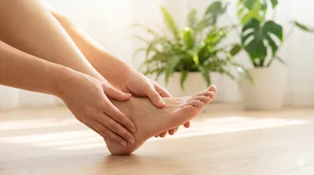
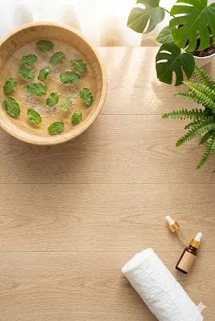

Longévité & santé · 8 min de lecture
8 symptômes des pieds qui peuvent révéler un problème de santé
Vos Pieds Vous Parlent : 8 Signaux d'Alerte Invisibles à Ne Jamais Ignorer
Regardez-les un instant. Cachés la majeure partie de la journée au fond de nos chaussettes ou de nos baskets, nous n'y prêtons attention que lorsqu'ils nous font souffrir après une longue journée de marche. Pourtant, vos pieds sont de véritables sentinelles. Situés à l'extrémité la plus éloignée de votre cœur, ils sont souvent les tout premiers à lever le drapeau rouge lorsque quelque chose se dérègle à l'intérieur.
Une simple modification de la texture de votre peau, une sensation de froid persistante ou un fourmillement passager ne sont pas toujours dus au hasard ou à une mauvaise paire de chaussures. Et si vos pieds étaient en train de vous envoyer un message crucial sur votre circulation, votre niveau de stress ou votre équilibre interne ?
Aujourd'hui, on baisse les yeux pour de bonnes raisons. Apprenons ensemble à décoder les 8 signaux majeurs que vos pieds tentent de vous communiquer.
Le problème : Le piège de négliger les fondations
Dans notre quête de bien-être, nous passons beaucoup de temps à analyser notre teint, notre sommeil ou notre digestion. Mais nous oublions trop souvent nos fondations. Ignorer les petits changements physiques au niveau des pieds, c'est comme ignorer le voyant orange qui s'allume sur le tableau de bord de votre voiture en espérant qu'il s'éteigne tout seul. À force de repousser, une simple fatigue passagère peut se transformer en un inconfort quotidien qui bloque votre élan et votre motivation.
La promesse : Reprendre une longueur d'avance grâce à l'écoute
Cet article ne remplace en aucun cas une consultation chez un médecin, un podologue ou un spécialiste. Sa promesse est de vous éveiller à une meilleure écoute de votre corps. En apprenant à identifier ces signes précoces, vous serez capable d'ajuster vos habitudes quotidiennes de manière fluide, naturelle et bienveillante, bien avant que l'inconfort ne s'installe.
Pourquoi cette approche globale est passionnante
En santé naturelle, on considère que tout est lié. Le pied contient des milliers de terminaisons nerveuses et une multitude de minuscules vaisseaux sanguins. C'est une cartographie miniature de votre vitalité. Prendre soin de ses pieds et savoir les observer, c'est s'offrir une clé de lecture fantastique pour chouchouter son organisme dans sa globalité.
Les 8 Symptômes des Pieds à Regarder de Près
1. Les pieds constamment glacés (même en été)
Vous avez beau porter des chaussettes en laine, vos pieds restent froids comme de la glace.
Ce que cela peut exprimer : C'est souvent le signe d'une circulation sanguine périphérique qui tourne au ralenti. Le sang peine à irriguer correctement les extrémités. Parfois, cela traduit aussi une fatigue de votre métabolisme de base qui a du mal à réguler le thermostat du corps.
2. Des fourmillements ou des engourdissements répétés
Cette sensation désagréable d'aiguilles qui piquent la plante de vos pieds, ou l'impression de marcher sur du coton.
Ce que cela peut exprimer : Cela peut être lié à une compression nerveuse passagère (liée à une mauvaise posture), mais c'est également un signal classique du système nerveux qui manifeste un inconfort, parfois lié à des variations de la glycémie ou à un manque de certaines vitamines essentielles.
3. Les pieds ou les chevilles qui gonflent en fin de journée
Vos chaussures vous serrent anormalement le soir et votre peau garde la marque de l'élastique de vos chaussettes.
Ce que cela peut exprimer : C'est le grand classique de la rétention d'eau ou d'un retour veineux paresseux. Le sang et la lymphe stagnent dans les membres inférieurs, accentués par la sédentarité ou les stations debout prolongées.
4. Des crampes nocturnes soudaines et douloureuses
Vous vous réveillez en sursaut au milieu de la nuit, le muscle de la voûte plantaire ou du mollet totalement tétanisé.
Ce que cela peut exprimer : Votre corps crie bien souvent son besoin d'hydratation. Ces crampes peuvent aussi survenir après un effort physique intense sans étirement adapté, ou traduire un léger manque de minéraux essentiels (comme le magnésium ou le potassium).
5. Une peau excessivement sèche, qui pèle ou se fendille
Malgré l'application de crèmes, vos talons restent rêches, se fissurent et de petites peaux blanchâtres desquament sous les orteils.
Ce que cela peut exprimer : Au-delà d'un manque d'hydratation externe, une peau qui pèle entre les orteils peut être le signe d'un petit déséquilibre de la flore cutanée (comme une mycose débutante favorisée par l'humidité). Des talons très fissurés peuvent aussi indiquer une mauvaise répartition des appuis lors de la marche.
6. La perte de poils sur les orteils
C'est un détail auquel on pense rarement, mais la disparition soudaine des petits poils présents sur le dessus des orteils est un indicateur précieux.
Ce que cela peut exprimer : Les follicules pileux ont besoin d'un excellent apport en oxygène et en nutriments pour pousser. Si les poils disparaissent, cela peut signifier que la circulation sanguine locale s'est affaiblie, privant la zone de son alimentation naturelle.
7. Des plaies ou des coupures qui mettent un temps infini à cicatriser
Une petite ampoule provoquée par une chaussure neuve reste rouge, ouverte ou sensible pendant plusieurs semaines sans s'essuyer.
Ce que cela peut exprimer : Une cicatrisation anormalement lente au niveau des extrémités est un signal majeur. Cela montre souvent que le système de réparation du corps est ralenti, un phénomène fréquemment observé lorsque la circulation des petits vaisseaux est entravée ou que la régulation du sucre dans le sang demande une attention médicale.
8. Des ongles épais, jaunis ou cassants
Vos ongles changent de couleur, perdent leur transparence naturelle et deviennent difficiles à couper.
Ce que cela peut exprimer : C'est le signe d'une fragilité de la kératine. Cela peut résulter de micro-traumatismes répétés dans vos chaussures de sport, mais c'est aussi le terrain favori des champignons microscopiques qui profitent d'une baisse locale des défenses immunitaires.
Le Rituel Naturel "Pieds Légers & Vitalité"
Pour relancer l'énergie et chouchouter vos fondations, voici une routine simple à faire chez vous une à deux fois par semaine.
Les ingrédients du bain de pieds bien-être
Une bassine d'eau tiède (pas trop chaude pour préserver les veines)
2 cuillères à soupe de sel d'Epsom (très riche en magnésium, idéal pour détendre les muscles)
3 gouttes d'huile essentielle de Menthe poivrée (pour la fraîcheur et la circulation) ou de Lavande vraie (pour le calme) diluées dans une cuillère à café d'huile végétale (amande douce ou olive).
Les étapes de votre routine
L'immersion : Plongez vos pieds dans le bain pendant 10 à 15 minutes. Profitez-en pour fermer les yeux et respirer profondément.
Le séchage minutieux : Sortez les pieds et séchez-les avec une serviette propre, en insistant bien entre chaque orteil pour éviter que l'humidité ne s'y installe.
L'auto-massage : Appliquez une noisette de crème hydratante ou d'huile de massage. Massez fermement votre voûte plantaire avec vos pouces, en faisant des mouvements circulaires du talon vers les orteils. Cela stimule instantanément le système nerveux et relance le flux sanguin.
À qui s'adresse ce rituel ?
Cette attention quotidienne est particulièrement recommandée pour :
Les sportifs qui sollicitent intensément leurs appuis (course à pied, calisthénie, marche).
Les personnes travaillant debout ou, à l'inverse, assises toute la journée derrière un bureau.
Quiconque souhaite s'accorder un vrai moment de déconnexion pour faire baisser le stress.
⚠️ Précautions importantes : Si vous observez une plaie qui ne guérit pas, une perte totale de sensibilité, un pied qui devient soudainement très chaud, rouge et gonflé, ou si vous présentez un terrain de santé particulier (comme un diabète diagnostiqué), n'attendez pas. Consultez immédiatement votre médecin traitant ou un podologue. Les soins des pieds sur des terrains spécifiques demandent une expertise médicale stricte.
FAQ utile pour vos lectures
Pourquoi le sel d'Epsom est-il si apprécié pour les pieds ?
Le sel d'Epsom est naturellement composé de sulfate de magnésium. Utilisé en bain de pieds, il contribue à dégonfler les tissus, à soulager les tensions musculaires et à procurer une immense sensation de légèreté après l'effort.
Quel est le meilleur moment pour inspecter ses pieds ?
Le moment idéal est le soir, juste avant le coucher ou après la douche. C'est le moment parfait pour observer la peau, masser les zones de tension accumulées pendant la journée et favoriser un endormissement serein.
Les pieds froids empêchent-ils de dormir ?
Oui, tout à fait. Pour s'endormir, le corps a besoin de baisser sa température centrale en évacuant la chaleur par les extrémités (mains et pieds). Si vos pieds sont glacés, les vaisseaux sont contractés et ce transfert thermique ne se fait pas. Réchauffer ses pieds permet de déclencher le signal du sommeil !
Conclusion : Prenez soin de ce qui vous porte
Vos pieds parcourent des milliers de kilomètres au cours de votre vie. Ils supportent votre poids, absorbent les impacts et traduisent silencieusement l'état de votre équilibre intérieur. En apprenant à les regarder avec bienveillance et à décoder leurs signaux, vous faites un pas de plus vers une santé consciente et rayonnante. Ne les oubliez plus : ils méritent toute votre attention.


Envie d'aller plus loin dans la compréhension des signaux de votre corps ? La santé naturelle est un voyage passionnant qui commence par la connaissance de soi. Ne laissez plus le stress ou la fatigue dicter votre quotidien. Découvrez nos guides pratiques exclusifs et nos ebooks thématiques pour apprendre à optimiser votre énergie, transformer votre hygiène de vie et écouter votre corps comme un expert.
Si la nature ne l'a pas créé, alors ne le consomme pas !
📚 Je suis auteur bien-être sous le pseudo Chest0 JM.S, et mes ouvrages sont disponibles sur Amazon.
🔗 Retrouve tout mon univers ici :
👉
✨ Commence aujourd’hui à nourrir ton système nerveux avec douceur, intelligence et naturel.
« Travail assis : pauses actives »
👉 Créez votre planning de pauses gratuit : chest0.fr/outils/pauses-actives/
« Journal du sommeil »
👉 Tenez votre journal du sommeil sur 7 jours, gratuitement : chest0.fr/outils/journal-sommeil/
« Les 20 aliments des centenaires » et « Microbiote intestinal »
👉 Mes livres de recettes naturelles, élixirs et détox : chest0.fr/pages/livres.html
« 4 habitudes à observer au quotidien »
👉 Faites le point sur vos habitudes avec l'outil gratuit : chest0.fr/outils/equilibre-quotidien/
Guides, outils gratuits et livres pour prendre soin de toi au quotidien.
Découvrir les produits Chest0